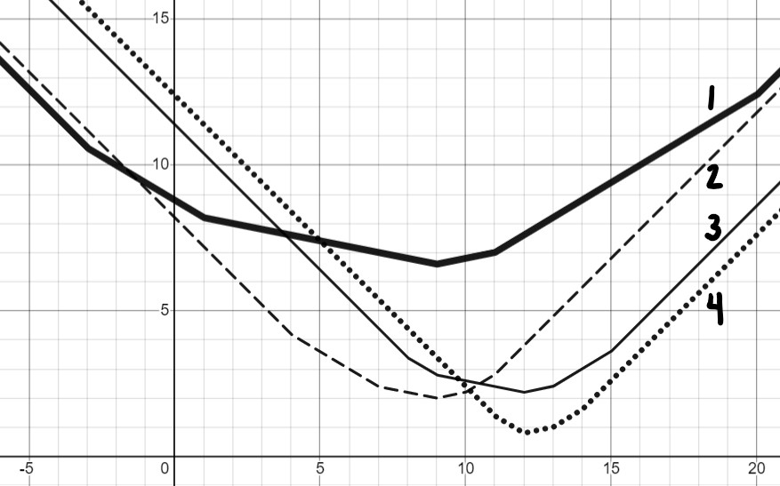
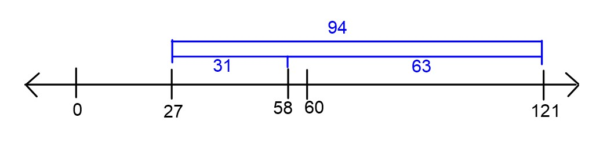
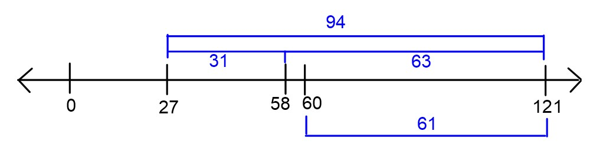

This page contains all problems about Empirical Risk
Minimization.
Problem 1
Originally Problem 1 on the Fall 2021 Midterm.
King Triton just made an Instagram account and has been keeping track
of the number of likes his posts have received so far.
His first 7 posts have received a mean of 16 likes; the specific like
counts in sorted order are
8, 12, 12, 15, 18, 20, 27
King Triton wants to predict the number of likes his next post will
receive, using a constant prediction rule h. For each loss function L(h, y), determine the constant prediction
h^* that minimizes empirical risk. If
you believe there are multiplie minimizers, specify them all. If you
believe you need more information to answer the question or that there
is no minimizer, state that clearly. Give a brief justification
for each answer.
Problem 1.1
L(h, y) = |y - h|
This is absolute loss, and hence we’re looking for the minimizer of
mean absolute error, which is the median, 15.
Problem 1.2
L(h, y) = (y - h)^2
This is squared loss, and hence we’re looking for the minimizer of
mean squared error, which is the mean, 16.
Problem 1.3
L(h, y) = 4(y - h)^2
This is squared loss, multiplied by a constant. Note that when we go
to minimize empirical risk for this loss function, we will take the
derivative of empirical risk and set it equal to 0; at that point the
constant factor of 4 can be divided from both sides, so this problem
boils down to minimizing ordinary mean squared error. The only
difference is that the graph of mean squared error will be stretched
vertically by a factor of 4; the minimizing value will be in the same
place.
For more justification, here we consider any general re-scaling \alpha (y-h)^2:
L(h, y) = \begin{cases} 0 & h = y \\
100 & h \neq y \end{cases}
This is a scaled version of 0-1 loss. We know that empirical risk for
0-1 loss is minimized at the mode, so that also applies here. The mode,
i.e. the most common value, is 12.
Problem 1.5
L(h, y) = (3y - 4h)^2
Note that we can write (3y - 4h)^2
as \left( 3 \left( y - \frac{4}{3}h \right)
\right)^2 = 9 \left( y - \frac{4}{3}h \right)^2. As we’ve seen,
the constant factor out front has no impact on the minimizing value.
Using the same principle as in the last part, we can say that \frac{4}{3} h^* = \bar{x} \implies h^* =
\frac{3}{4} \bar{x} = \frac{3}{4} \cdot 16 = 12
Problem 1.6
L(h, y) = (y - h)^3
Hint: Do not spend too long on this subpart.
No minimizer.
Note that unlike |y - h|, (y - h)^2, and all of the other loss
functions we’ve seen, (y - h)^3 tends
towards -\infty, rather than having a
minimum output of 0. This means that there is no h that minimizes \frac{1}{n} \sum_{i = 1}^n (y_i - h)^3; the
larger we make h, the more negative
(and hence “smaller") this empirical risk becomes.
Problem 2
Originally Problem 2 on the Fall 2021 Midterm.
Consider a set of 23 data points y_1, y_2,
y_3, ..., y_{23} such that y_1 < y_2
< ... < y_{23}. Let’s call this Dataset A.
We create a new dataset, Dataset B, by repeating each point in
Dataset A once. That is, Dataset B is the set of 46 points y_1, y_1, y_2, y_2, ..., y_{23}, y_{23}.
Answer the following questions regarding the relationship between
Dataset A and Dataset B. Justify your answers.
Problem 2.1
Suppose the minimizer of mean absolute error R_{abs}(h) for Dataset A is 5. What is the
minimizer of mean absolute error for Dataset B? If you believe there are
multiple minimizers, specify them all. If you believe you need more
information to answer the question, state that clearly.
The minimizer of MAE for Dataset B is still 5. Note that when we
repeat each data point, we go from having an odd number of data points
(23) to an even number (46). This means the minimizer is the set of all
values between the middle two values. But the middle two values will now
both be y_{12}, and so there are no
numbers “in between" them – only y_{12}
minimizes MAE.
Problem 2.2
Suppose the mean absolute deviation from the median for
Dataset A is 17. What is the mean absolute deviation from the
median for Dataset B? If you believe you need more information to
answer the question, state that clearly.
The mean absolute deviation from the median for Dataset B is still
17. As we saw in previous part, the median itself does not change. When
adding together the deviations from the median, each point is repeated
twice, so the sum of all deviations from the median is doubled. However,
there are twice as many data points in Dataset B than there are in
Dataset A, so we divide by 2n (46)
instead of n (23) in our average.
In short, for Dataset B both the numerator and denominator in the
calculation of mean absolute deviation from the median \frac{\sum_{i = 1}^n |y_i -
\text{Median}(y)|}{n} are double what they were for Dataset A, so
the end result is the same as for Dataset A.
Problem 2.3
Suppose the function R_A(h)
represents mean absolute error for Dataset A and R_B(h) represents mean absolute error for
Dataset B.
Is it true that R_A(h) = R_B(h) for
any real number h? (In other words, are
the graphs of R_A(h) and R_B(h) identical?) Explain your
reasoning.
Originally Problem 3 on the Fall 2022 Midterm Exam.
Mahdi runs a local pastry shop near UCSD and sells traditional desert
called Baklava. He bakes Baklavas every morning to keep his promise of
providing fresh Baklavas to his customers daily. Here is the amount of
Baklava he sold each day during last week in pounds(lb): y_1=100, y_2=110, y_3=75, y_4=90, y_5=105, y_6=90,
y_7=25
Mahdi needs your help as a data scientist to suggest the best
constant prediction (h^*) of daily
sales that minimizes the empirical risk using L(h,y) as the loss function. Answer the
following questions and give a brief justification for
each part. This problem has many parts, if you get stuck, move
on and come back later!
Problem 3.1
Let L(h,y)=|y-h|. What is h^*? (We’ll later refer to this prediction as
h_1^*).
As we have seen in lectures, the median minimizes the absolute loss
risk function. h^*_1=\text{Median}(y_1,
\cdots, y_7).
Problem 3.2
Let L(h,y)=(y-h)^2. What is h^*? (We’ll later refer to this prediction as
h_2^*).
As we have seen in lectures, the mean minimizes the square loss risk
function. h^*_2=\text{Mean}(y_1, \cdots,
y_7).
Problem 3.3
True or False: Removing y_1 and y_3
from the dataset does not change h_2^*.
True
False
False. It changes the mean from 85 to 84.
(However, the median is not changed.)
Problem 3.4
Mahdi thinks that y_7 is an outlier.
Hence, he asks you to remove y_7 and
update your predictions in parts (a) and (b) accordingly. Without
calculating the new predictions, can you justify which prediction
changes more? h^*_1 or h_2^*?
The mean squared loss is more sensitive to outliers than absolute
loss, and removing data changes the mean more. Therefore, removing y_7 affects h_2^* more than h_1^*.
Problem 3.5
True or False: Let L(y,h)=|y-h|^3. You can use the Gradient
descent algorithm to find h^*.
True
False
False. The function |y-h|^3 is not differentiable everywhere so
we can not use the gradient descent to find the minimum.
Problem 3.6
True or False: Let L(y,h)=\sin(y-h). The Gradient descent
algorithm is guaranteed to converge, provided that a proper learning
rate is given.
True
False
False. The function is not convex, so the gradient
descent algorithm is not guaranteed to converge.
Problem 3.7
Mahdi has noticed that Baklava daily sale is associated with weather
temperature. So he asks you to incorporate this feature to get a better
prediction. Suppose the last week’s daily temperatures are x_1, x_2, \cdots, x_7 in Fahrenheit (F). We
know that \bar x=65, \sigma_x=8.5 and the best linear prediction
that minimizes the mean squared error is H^*(x)=-3x+w_0^*.
What is the correlation coefficient (r) between x
and y? What does that mean?
We know w_1^* =
\frac{\sigma_y}{\sigma_x}r. We know that \sigma_x=8.5 and w_1^*=-3. We can find \sigma_y as follows:
Then, \sigma_y=26.7 which results in
r=-0.95. That means the weather
temperature inversely affects Baklava sales, i.e., they are highly
negatively correlated.
Problem 3.8
True or False: The unit of r is \frac{lb}{F} (Pound per Fahrenheit).
True
False
False. The correlation coefficient has no unit. (It
is always a unitless number in [-1,1]
range.)
Problem 3.9
Find w^*_0. (Hint: You’ll need
to find \bar y for the given
dataset)
Note that H(\bar x)=\bar y.
Therefore, \begin{aligned}
H(65)=-3\cdot 65 +w_0^*=85 \xrightarrow[]{}w_0^*=280.
\end{aligned}
Problem 3.10
What would the best linear prediction H^*(x) be if we multiply all x_i’s by 2?
The standard deviation scales by a factor of 2, i.e., \sigma_x'=2\cdot \sigma_x. The same
is true for the mean, i.e., \bar{x}'=2
\cdot \bar{x}. The correlation r, standard deviation of the y-values \sigma_y, and the mean of the y-values \bar y do not change. (You can verify
these claims by plugging 2x in for
x in their respective formulas and
seeing what happens, but it’s faster to visually reason why
this happens.)
What would the best linear prediction H^*(x) be if we add 20 to all x_i’s?
All parameters remain unchanged except \bar{x}'=\bar{x}+20. Since r, \sigma_x
and \sigma_y are not changed, w_1^* does not change. Then, one can find
w_0^* as follows:
Originally Problem 4 on the Fall 2022 Midterm Exam.
Consider a dataset that consists of y_1,
\cdots, y_n. In class, we used calculus to minimize mean squared
error, R_{sq}(h) = \frac{1}{n} \sum_{i = 1}^n
(h - y_i)^2. In this problem, we want you to apply the same
approach to a slightly different loss function defined below: L_{\text{midterm}}(y,h)=(\alpha y - h)^2+\lambda
h
Problem 4.1
Write down the empiricial risk R_{\text{midterm}}(h) by using the above loss
function.
R_{\text{midterm}}(h)=\frac{1}{n}\sum_{i=1}^{n}[(\alpha
y_i - h)^2+\lambda h]=[\frac{1}{n}\sum_{i=1}^{n}(\alpha y_i - h)^2]
+\lambda h
Problem 4.2
The mean of dataset is \bar{y}, i.e.
\bar{y} = \frac{1}{n} \sum_{i = 1}^n
y_i. Find h^* that minimizes
R_{\text{midterm}}(h) using calculus.
Your result should be in terms of \bar{y}, \alpha and \lambda.
By setting \frac{d}{dh}R_{\text{midterm}}(h)=0 we get
2 h^*-2\alpha \bar{y} + \lambda=0 \Rightarrow
h^*=\alpha \bar{y} - \frac{\lambda}{2}.
Problem 5
Originally Problem 1 on the Spring 2023 Final Part 1
For a given dataset \{y_1, y_2, \dots,
y_n\}, let M_{abs}(h) represent
the median absolute error of the constant prediction
h on that dataset (as opposed to the
mean absolute error R_{abs}(h)).
Problem 5.1
For the dataset \{4, 9, 10, 14,
15\}, what is M_{abs}(9)?
5
The first step is to calculate the absolute errors (|y_i - h|).
Now we have to order the values inside of the absolute errors: \{0, 1, 5, 5, 6\}. We can see the median is
5, so M_{abs}(9) =5.
Problem 5.2
For the same dataset \{4, 9, 10, 14,
15\}, find another integer h
such that M_{abs}(9) = M_{abs}(h).
5 or 15
Our goal is to find another number that will give us the same median
of absolute errors as in part (a).
One way to do this is to plug in a number and guess. Another way
requires noticing you can modify 10
(the middle element) to become 5 in
either direction (negative or positive) because of the absolute
value.
We can solve this equation to get |10-x| =
5 \rightarrow x = 15 \text{ and } x = 5.
We can then test this by following the same steps as we did in part
(a).
We do not have to re-order the elements because they are in order
already. We can see the median is 5, so
M_{abs}(5) =5.
Problem 5.3
Based on your answers to parts (a) and (b), discuss in at
most two sentences what is problematic about using the median
absolute error to make predictions.
The numbers 5 and 15 are clearly bad predictions (close to the
extreme values in the dataset), yet they are considered just as good a
prediction by this metric as the number 9, which is roughly in the center of the
dataset. Intuitively, 9 is a much
better prediction, but this way of measuring the quality of a prediction
does not recognize that.
Problem 6
Originally Problem 2 on the Spring 2023 Final Part 1
Match each dataset with the graph of its mean absolute error, R_{abs}(h).
Problem 6.1

\{4, 7, 9, 10, 11\}
Graph 1
Graph 2
Graph 3
Graph 4
Graph 2
The important thing to note here is the y axis is equal to R_{abs}(h) and the x axis is equal to our
h. The easiest way to figure out which
graph belongs to which dataset is to choose some numbers for h and see if a line matches up with the
chosen points.
When looking at these three places we can see that this dataset
matches Graph 4. Another way would be choosing the only option not
chosen in the other parts yet!
Problem 7
Originally Problem 5c on the Spring 2023 Final Part 1
Now we solve the normal equations and find the solution to be
\begin{aligned}
\vec{w}^* &= \begin{bmatrix} w_0^* \\ w_1^* \\ w_2^*
\end{bmatrix}
\end{aligned}
Define a new vector:
\begin{aligned}
\vec{w}^{\circ} &= \begin{bmatrix} w_0^{\circ} \\
w_1^{\circ} \\ w_2^{\circ} \end{bmatrix} = \begin{bmatrix} w_0^*+3 \\
w_1^*-4 \\ w_2^*-6 \end{bmatrix}
\end{aligned}
Let \text{MSE} represent the mean
squared error of a prediction rule, and let \text{MAE} represent the mean absolute error
of a prediction rule. Select the symbol that should go in each
blank.
Problem 7.1
\text{MSE}(H^*) ___ \text{MSE}(H^{\circ})
\leq
\geq
=
\leq
Recall the equation for mean squared error: \text{MSE}(H(x_i)) =
\frac{1}{n}\sum_{i=1}^n(y_i-H(x_i))^2. We can figure out which is
bigger by subtracting \text{MSE}(H^{\circ}) from \text{MSE}(H^*). The difference between the
squared differences is: (y_i-H^*(x_i))^2-(y_i-H^{\circ}(x_i))^2Notice
there is a squared element, which means that the differences of w^*_0 - w^{\circ}_0, w^*_1 - w^{\circ}_1, and w^*_2 - w^{\circ}_2 will appear as squared
terms, which are always positive! This means adding these squared
differences to H^* will make it at
least as large as the squared difference for H^{\circ}.
Recall the equation for mean absolute error: \text{MAE}(H(x_i)) =
\frac{1}{n}\sum_{i=1}^n|y_i-H(x_i)|.
This equation looks very similar to the mean squared error! We can
actually take the square root of each sides of this equation to learn
more about which side is larger:
\begin{align*}
(\text{MAE}(H^\circ))^2 &\_\_\_ \text{MSE}(H^\circ) \\
\sqrt{(\text{MAE}(H^\circ))^2} &\_\_\_ \sqrt{\text{MSE}(H^\circ)} \\
\text{MAE}(H^\circ) &\_\_\_ \sqrt{\text{MSE}(H^\circ)}
\end{align*}
The square root of \text{MSE} is
equal to \text{MAE}! These two elements
are basically the same because squaring a value will lead to
non-negatives and then it will be square rooted to match the absolute
value from \text{MAE}. However the
\text{MSE} being square rooted also
allows for it to be smaller than the \text{MSE} making the correct symbol \geq.
Problem 8
Originally Problem 1 on the first Midterm of Spring 2023
Consider a dataset such that 60 \leq y_1
\leq y_2 \leq \dots \leq y_n. Let R_{abs}(h) represent the mean absolute error
of a constant prediction h on this
dataset. Suppose we know that R_{abs}(27) =
94.
Problem 8.1
Find \bar y, or the mean of \{y_1, y_2, \dots, y_n\}.
There are several ways to do this problem. One way is to interpret
mean absolute error of a constant prediction h as the average distance of each data point
to h. So we are told that the average
distance of each data point to 27 is
94. That is, the data points are 94 units away from 27 on average. Since all the data is at least
60, they must be 94 units more than 27, or 121,
on average.
You can also arrive at the same answer algebraically using the
definition of R_{abs}(h). We have \begin{aligned} R_{abs}(h) &= \frac1n
\sum_{i=1}^{n}|y_i - h| \\ R_{abs}(27) &= \frac1n \sum_{i=1}^{n}|y_i
- 27| \\ &= \frac1n \sum_{i=1}^{n}(y_i - 27) \qquad \text{because
each~} y_i\geq 60 \\ &= \frac1n\left( \sum_{i=1}^{n}y_i -
\sum_{i=1}^{n}27\right) \\ &= \frac1n\left( n\cdot\bar y -
n\cdot27\right) \\ &= \bar y - 27 \end{aligned}
Since we are told that R(27) = 94,
we can set \bar y - 27 = 94, to find
that \bar y = 121.
Problem 8.2
Find R_{abs}(58).
Again, we can do this problem in multiple ways. Interpreting R_{abs}(h) as the average distance of each
data point to h, we can see that since
58 is 31 units closer to each data point than 27, R_{abs}(58) =
R_{abs}(27) - 31 = 94 - 31 = 63.
Another way to do this problem uses the answer from part (a). Since
the data points average to 121, their
distance to 58 is 121-58 = 63, on average.

Problem 8.3
Which of the following could be the mean absolute deviation
from the median for this dataset? There is only one correct answer.
18
62
94
102
One easy way to do this problem is to recognize that none of these
values are too low, but they may be too high. For example, the mean
absolute deviation from the median can be as low as 0, when all the data points are the same.
Since we are told there is only one correct answer and we know that no
answer choice is too low, that means the correct answer must be the
lowest option, 18.
We can also rule out all the other answer choices to show that they
are too high. To do that, we’ll show that 62 is too high, and therefore, both 94 and 102
are too high as well. We are told that all data points are at least
60. By similar logic as we used in part
(b), we can see that R_{abs}(60) = 61.
Since the minimum value of R_{abs}(h)
occurs at the median h^*\geq 60 and we
already know R_{abs}(60) = 61, it must
be the case that R(h^*) \leq 61.

Problem 9
Originally Problem 2 on the first Midterm of Spring 2023
Let R_{sq}(h) represent the mean
squared error of a constant prediction h for a given dataset. Find a dataset \{y_1, y_2\} such that the graph of R_{sq}(h) has its minimum at the point (7,16).
We’ve already learned that R_{sq}(h)
is minimized at the mean of the data, and the minimum value of R_sq(h) is the variance of the data. So we
need to provide a dataset of two points with a mean of 7 and a variance of 16. Recall that the variance is the average
squared distance of each data point to the mean. Since we want a
variance of 16, we can make each point
4 units away from the mean. Therefore,
our data set can be y_1 = 3, y_2 = 11.
In fact, this is the only solution.
A more calculative approach uses the formulas for mean and variance
and solves a system of two equations:
Originally Problem 2 on the first Midterm of Winter 2022
Consider a new loss function, L(h, y) =
e^{(h-y)^2}. Given a dataset y_1, y_2,
\dots, y_n, let R(h) represent
the empirical risk for the dataset using this loss function.
Problem 10.1
For the dataset \{1, 3, 4\},
calculate R(2). Simplify your answer as
much as possible without a calculator.
We need to calculate the loss for each data point then average the
losses. That is, we need to calculate R(2) =
\dfrac{1}{3} \sum_{i=1}^{3} e^{(2-y_i)^2}. The table below
records the necessary information:
For the same dataset \{1, 3, 4\},
perform one iteration of gradient descent on R(h), starting at an initial prediction of
h_0=2 with a step size of \alpha=\frac{1}{2}. Show your work and
simplify your answer.
First, we calculate the derivative of R(h). Using the chain rule, we have \begin{align*} R(h) &= \dfrac1n \sum_{i=1}^n
e^{(h-y_i)^2} \\
R'(h) &= \dfrac1n \sum_{i=1}^n e^{(h-y_i)^2}\cdot 2(h-y_i) \\
\end{align*} To apply the gradient descent update rule, we next
have to calculate R'(h_0) or R'(2). Plugging in h=2 to the derivative we calculated above
gives: \begin{align*}
R'(2) &= \dfrac1n \sum_{i=1}^n e^{(2-y_i)^2}\cdot 2(2-y_i)
\end{align*}
The table below records the necessary information (note that we’ve
done most of the work already).
Originally Problem 3 on the Winter 2024 Final Part 1
Suppose there is a dataset contains four values: -2, -1,
2, 4.
You would like to use gradient descent to minimize the mean square error
over this dataset.
Problem 11.1
Write down the expression of mean square error and its derivative
given this dataset.
R_{sq}(h) =
\frac{1}{4}\sum_{i=1}^{4}(y_i-h)^2
Recall the equation for R_{sq}(h) =
\frac{1}{n}\sum_{i=1}^{n}(y_i-h)^2, so we simply need to replace
n with 4 because there are 4 elements in our dataset.
Since we have the equation for R_{sq}(h) we can calculate the
derivative:
\begin{align*}
\frac{dR_{sq}(h)}{dh} &=
\frac{dR_{sq}(h)}{dh}(\frac{1}{4}\sum_{i=1}^{4}(y_i-h)^2) \\
&= \frac{1}{4}\sum_{i=1}^{4}\frac{dR_{sq}(h)}{dh}((y_i-h)^2) \\
\end{align*}
We can use the chain rule to find the derivative of (y_i-h)^2. Recall the chain rule is: \frac{df(x)}{dx}[(f(x))^n] = n(f(x))^{n-1} \cdot
f'(x).
Suppose you choose the initial position to be h_0 and the learning rate to be \frac{1}{4}. After two gradient descent
steps, h_2=\frac{1}{4}. What is the
value of h_0?
h_{0} = -\frac{5}{4}
The gradient descent equation is given by: \begin{aligned}
h_i = h_{i-1} - \alpha \frac{dR_{sq}(h_{i-1})}{dh}
\end{aligned} Recall the learning rate is equal to \alpha. We can plug in \alpha = \frac{1}{4}, h_2 = \frac{1}{4}, and i=2, in that case we obtain: \begin{aligned}
\frac{1}{4} &= h_{1} - \alpha \frac{dR_{sq}(h_{1})}{dh}\\
&= h_{1} - \alpha \frac{1}{2}\sum_{i=1}^{4}(h_1-y_i)\\
&= h_{1} - \frac{1}{8}(h_{1} + 2 + h_{1} + 1 + h_{1} - 2 +
h_{1} - 4)\\
&= h_{1} - \frac{1}{8}(4h_{1} -3)\\
\end{aligned} Solving this equation, we obtain that h_{1} = -\frac{1}{4}. We can then repeat this
step once more to obtain h_0: \begin{aligned}
-\frac{1}{4} &= h_{0} - \alpha \frac{dR_{sq}(h_{0})}{dh}\\
&= h_{0} - \frac{1}{4}(h_{0} + 2 + h_{0} + 1 + h_{0} - 2 +
h_{0} - 4)\\
&= h_{0} - \frac{1}{8}(4h_{0} -3)\\
\end{aligned} Solving this equation, we obtain that h_{0} = -\frac{5}{4}.
Problem 11.3
Given that we set the tolerance of gradient descent to be 0.1. How many additional
steps beyond h_2 do we need to
take to reach convergence?
0
1
2
3
4
It will never converge
2 or 3 additional steps (both are correct).
The gradient descent equation is given by: \begin{aligned}
h_i = h_{i-1} - \alpha \frac{dR_{sq}(h_{i-1})}{dh}
\end{aligned} Now we start from \alpha
= \frac{1}{4}, h_2 =
\frac{1}{4}, and i=2, in that
case we obtain: \begin{aligned}
h_{3} &= h_{2} - \alpha \frac{dR_{sq}(h_{2})}{dh}\\
&= h_{2} - \frac{1}{8}(4h_{2} -3)\\
&= \frac{1}{4} - \frac{1}{8}(1 -3)\\
&= \frac{1}{2}\\
\end{aligned} Iteratively, we have: \begin{aligned}
h_{4} &= h_{3} - \alpha \frac{dR_{sq}(h_{3})}{dh}\\
&= h_{3} - \frac{1}{8}(4h_{3} -3)\\
&= \frac{1}{2} - \frac{1}{8}(2 -3)\\
&= \frac{5}{8}\\
\end{aligned}\begin{aligned}
h_{5} &= h_{4} - \alpha \frac{dR_{sq}(h_{4})}{dh}\\
&= h_{3} - \frac{1}{8}(4h_{4} -3)\\
&= \frac{5}{8} - \frac{1}{8}(\frac{5}{2}-3)\\
&= \frac{11}{16}\\
\end{aligned} from h_4 to h_5, the change is smaller than the
tolerance. That means we need additional 2 or 3 steps
to reach convergence (depending on if you actually perform h_4 to h_5,
so both 2 and 3 are considered correct answer).
Problem 12
Originally Problem 2 on the first Winter 2024 Midterm
Exam.
Let R_{sq}(h) represent the mean
squared error of a constant prediction h for a given dataset. For the dataset \{3, y_{1}\}, the graph of R_{sq}(h) has its minimum at the point (5,r_{1}). Find out the value of y_{1} and r_{1}
The mean squared error is written as: \begin{align*}
R_{sq}(h) = \frac{1}{n}\sum_{i=0}^{n}(y_{i}-h)^2
\end{align*}
Since we only have two data points (n=2), the equation simplifies to: